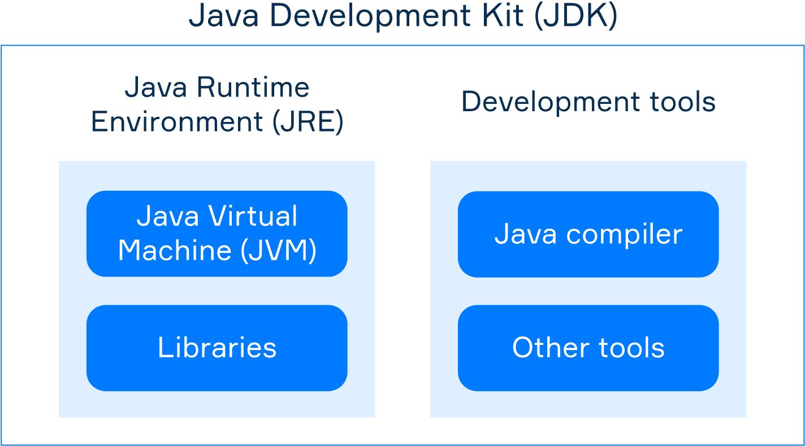

JVM languages, such as Java, Kotlin, or Scala, may be confusing for beginners since there are a number of basic terms that might be hard to differentiate between at first. This topic will get you more familiar with development for Java Platform by introducing those basics and giving an overview of how the code is being treated by different components of the platform.
The Java Virtual Machine, or JVM, is a virtual simulation of a physical computer. It executes the Java (or Java-compatible) bytecode, which comes after the source code compilation. In some sense, JVM acts as a mediator between the code and the real machine. It operates with a set of unified bytecode instructions that are interpreted and translated into machine instructions.
JVMs are available for many hardware and software platforms, so you can run the bytecode almost everywhere. A program compiled to bytecode is almost always platform-independent. Basically, when you have a JVM language code, you need to compile it only once, get the bytecode, and you'll be able to run it on any platform that has JVM.
Today there is a variety of JVM implementations, Java HotSpot Virtual Machine being the primary reference.
Java Runtime Environment, or JRE, is an execution environment. It includes the necessary components for running compiled JVM programs: the JVM itself and the Java Class Library (JCL).
JCL is essentially a set of standard libraries providing the most common functionality: fundamental classes, input/output, math package, collections, security, user interface toolkits, and many others. You can utilize these libraries in your programs.
When you run a compiled program, JRE combines the program bytecode with necessary libraries and runs the JVM, which executes the resulting bytecode.
Java Development Kit, or JDK, is a package to develop programs for the Java Platform. It includes JRE to run the programs and tools for developers: Java compiler, debugger, archiver, documentation generator, etc.
At the compilation stage, compilers translate source code into
.class files that contain bytecode and can be executed by JVM. Note that if you're using
JVM languages other than Java, you will need to download compilers separately, as they are not bundled with JDK.
In practice, programs often consist of multiple
.class files packed together with an archiver tool into a single Java Archive (JAR file).
JRE can run the program packed into a JAR directly without extracting the archived files. The resulting file is more
convenient to store and share over the network since the data is compressed.
The following image illustrates the relationship between JVM, JRE, and JDK:
